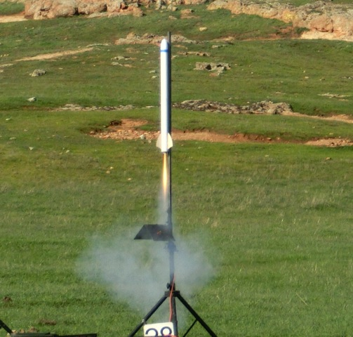
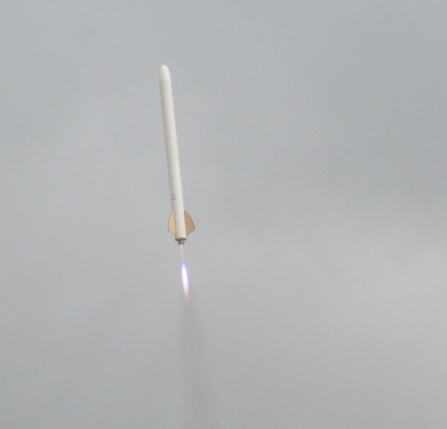
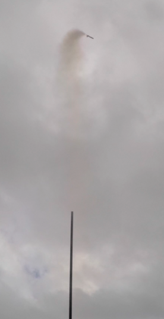
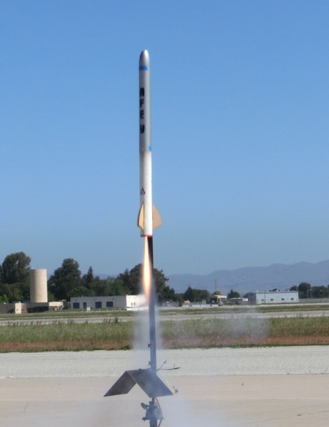

AFE TARC is a homeschool team participating in the Team America Rocketry Challenge for their first time. We built and flew rockets in an attempt to complete the TARC goal: to launch a raw egg to 800 feet and return it in 47 seconds intact.
We flew our first flights at Snow Ranch on Feburary 14, 2015. The first flight (below) was an F70-7, but we also flew an F51-6. These two flights were very promising with altitudes in the 802 to 790 foot range, but we encountered some parachute tangling issues.
The next flights were February 21st at Moffett Field, and these were our first flights with the Y booster and Y payload. The Y booster went 78 feet over the 800 foot target and exhibited unstable spiraling known as "coning" so we decided to retire the Y booster. The other flight used the X booster and hit a reasonable 828 feet. Recovery was nominal on both flights.
Our final set of flights were on March 21, 22, and 29. We flew the new booster Z and flew 3 more practice flights, with very close altitudes but descent times that were a bit long. The 4th and final flight of the day was our first qualification flight, one of the three flights the team gets a score for. This flight hit an excellent 801 feet with a duration of 52 seconds, longer than the target 47 seconds.
Flights on March 22 were less than ideal. The rocket using the Z booster flew around 50 feet lower than planned for the first two flights. Swapping in the payload section for the Y payload turned in a perfect flight to 806 feet. However, the final flight of the day and second qualification flight did not go well. The rocket veered off course clearing the launch pad and continued to spiral rapidly until the motor burnt out.
Post-flight analysis revealed that the motor mount had bent on landing on a previous flight causing an off-axis line of thrust for the qualification flight. So close, yet so far.
The final flights on March 29 went very well. We had built a new booster, ∆, and flew three practice flights getting it right into the 800 foot range with 46-48 second descent times, although the two parachutes did tangle a few times, leading to some on-site parachute configuration redesign. We called our final qualification flight and had what's called a motor cato (catastrophe at take off). The rocket launched perfectly until about .75 seconds into the burned at around 300 feet where the motor exploded, sending the payload and booster flying out of control (fortunately both parachutes opened). Normally a qualification flight can't be canceled, but since the motor exploded we were allowed a retry. We had to repair the burnt booster but it was still flyable, and switch to an F70-7 as we were out of F51s. With a bit of weight added to compensate for the extra impulse of the F70, we launched again for our final qualification flight. The flight went almost perfectly to 811 feet with a time of 47 seconds! A perfect end to our TARC finals.
The two flights that we are scored for were the first (801 feet/52 seconds) and last (811 feet/47 seconds), which leaves us with a fairly good total score of 42.
CornDog Rocket Workx for funding
Jolly Logic for altimeter
Fruity Chutes for parachutes
Bay Area Rocketry for motors and supplies
David Raimondi for building supplies
Animal Motor Works for motors
Off We Go Rocketry for motors (and rushing them to us!)
Our Parents and Families
Captain Ben Holland
Keith Veditz
Theo Littlestone
Abe Jellinek
Truxton Fulton
Mentor Jay Friedland
Chris Placos